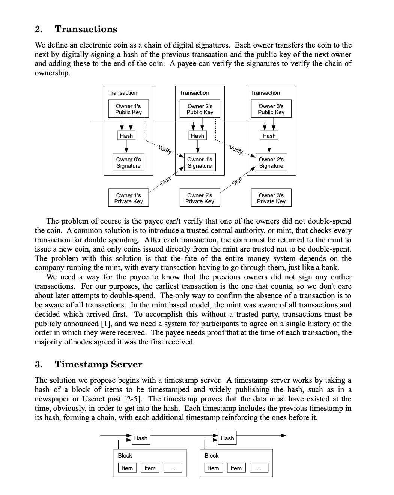

How to explain Bitcoin Whitepaper to a 8 year old kid - Part 2

Transactions - How digital coins change hands safely in Bitcoin Town
In Bitcoin Town, people dont pass around shiny metal coins — they pass around digital coins made of math. Each Bitcoin coin is really just a chain of digital signatures that shows who owned it before.
How a Coin Changes Hands
When Alice wants to pay Bob, she takes the record of her coin, signs it using her private key (like a secret password), writes down Bobs public key (his public address), and sends it to the network. Now everyone can see: "Alice signed this coin and gave it to Bob."
The Big Problem: Double-Spending
What if Bob tries to send the same coin to both Carol and Dave at the same time? Both transactions look valid. Now there are two versions of the truth!
The Solution: Public Records
Instead of one company knowing everything, everyone in the network keeps a shared public record — the blockchain. Every time a new transaction happens, its announced to everyone. Anyone can look at the record and see which transaction came first.
In short:
- 💻 Each Bitcoin is a chain of digital signatures showing who owned it before.
- 🔐 People use secret keys to prove ownership and transfer coins.
- ⚠️ To stop double-spending, all transactions are made public.
- ⛓️ Everyone works together to agree on one true history — the blockchain.
P.S. Written with help from AI.